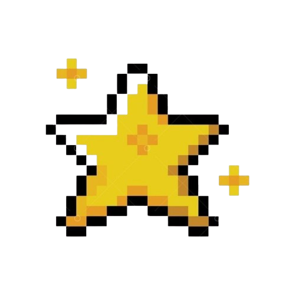
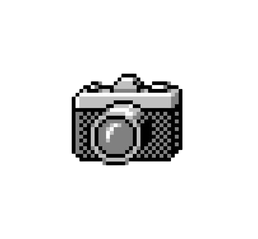

Hi, It's Ghanz
I'm a Learner
Holaa Amigos, Ahlan Biikum Fii Portofolio Ghanzz. Kenalin aku Kautsar seorang pelajar SMAN 5 Yogyakarta yang memiliki minat besar dalam dunia teknologi dan pemrograman. Aku sangat antusias untuk belajar lebih banyak tentang coding, pengembangan web, dan berbagai aspek teknologi lainnya. Aku percaya bahwa teknologi memiliki kekuatan untuk mengubah dunia, dan aku
Get To Know Me
My Projects
Ini beberapa project yang kugarap. Enjoy it!
KARSA FILM
Kadang, kita terlalu sibuk melihat berbagai perbedaan, sampai lupa kalau yang kita butuhkan adalah saling mendengar, memahami, serta membuka hati. Karsa merupakan film pendek yang menceritakan tentang Made, seorang siswa pindahan dari Bali yang memeluk agama Hindu. Ia awalnya belum bisa menerima kenyataan bahwa dia harus pindah ke sekolah baru ini. Terasing, terkucilkan, dan rasa tidak diterima selalu menghantui di lingkungan barunya. Namun, di balik tembok perbedaan, terdapat benih-benih kerukunan yang menunggu untuk tumbuh dan berkembang melalui tangan-tangan ketulusan. Lewat persahabatan nya dengan Yasmin dan Kevin, Made telah belajar satu hal penting bahwa kerukunan bukan berarti menyeragamkan keyakinan tetapi tentang menciptakan harmoni dalam keberagaman. Sebuah film pendek karya siswa-siswi SMA Negeri 5 Yogyakarta yang berdurasi lima menit ini telah menyadarkan kita akan pentingnya kerukunan, toleransi, harmonisasi, serta keberanian untuk berdamai dengan diri sendiri maupun orang lain.
Services
Aku menawarkan beberapa layanan kerjasama maupun project yang bisa kamu pilih:
Fotografi
Video Editing
Animasi
Tools Robotik
POSTER

Contact
Hubungi saya melalui email atau media sosial yang tersedia di bagian atas.
areserve630@gmail.com
Social
Discord, GitHub, Facebook, Instagram.
Location
Yogyakarta, Indonesia.